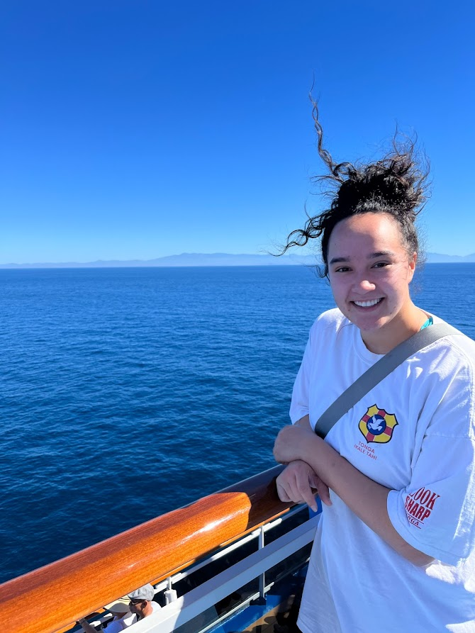

Throughout my resume thus far you have learned a lot about me that directly applies to a work environment! In this portion of my resume I want to get a bit more personal and specific to me! I have broken this About Me page into a few sections that I feel will round out who I am outside of work!
Feel free to use these buttons below to jump to different portions of the Resume:
[Just Married]
[Sports]
[Video Games]
[Friends]
[Thank You]

I recently got married to my beautiful wife Sami on June 25th, 2022!

We met while serving our Missions for the Church of Jesus Christ of Latter-day Saints! We had the opportunity to serve the people of Tonga at the same time! We were in the same district for a period of time (Pictured above) and we are so grateful for our missions!
We have already been on so many adventures - our latest adventure being a week long cruise that travelled down the coast of Mexico!

Sports have played a huge part in my life! In high school I played football, volleyball, rugy, lacrosse, and ran track! Even today whenever I have the opportunity to play sports I will! I recently picked up the sport of golf and it is one of my favorites! Below is a list of my favorite sports:
In relation to the sports section I wanted to add this Tableau Visualization Project (by - Pradeep Kumar G). This visualization shows the most expensive sports for kids and is broken up into specific categories! Feel free to use the slider found below the graph to view the full graph and also access the fullscreen window in the bottom right! Once again this is not my work I am just implementing it into this About Me page as I found it interesting. All credit and information can be found in the Credits portion of the graph in the bottom right (Make sure to slide the slider over)!

Although video games can sometimes get a bad rep, not only have I had some great experiences gaming I believe I have also developed some real-life skills through gaming. One aspect of gaming that always intruiged me was server moderation. Games have unique individual servers that have a certain amount of active users, because of this there is a need for server moderators. From a young age I applied to many different servers to moderate and made it through the interview process! In this experience I learned teamwork skills, communication skills, computer skills, and more! I believe gaming is also the base of why I enjoy computers now! Above is an image of my current computer setup.
Below is a list of my favorite games in order:
To show how big gaming has become I wanted to share a Youtube video of a CSGO (Counter-Strike Global Offensive) tournament with a huge prize pool:
Haning out with my friends and family is one of my favorite things to do! I have been very fortunate to have kept the same friend group from elementary school all the way through college! We all are now attending BYU and were able to live together before some of us got married!
Here is a list/shoutout of some of my best friends:
Thank you for checking out my About You portion of my resume! Hopefully you learned a bit more about me outside of a work environment. I want to note that this page was created completely from scratch in Visual Studio Code. Thanks again!
[Back to Top]